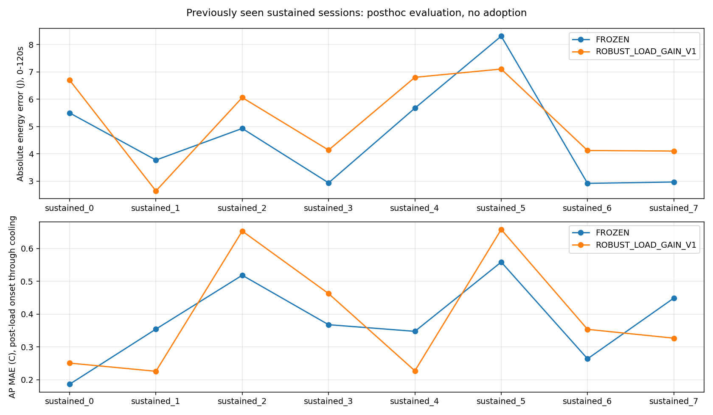
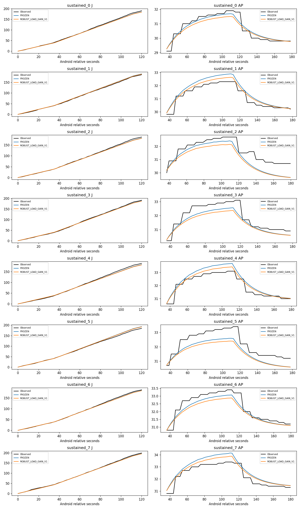

사후 개발9 · 적합에서 제외한 기존 지속8. 새 독립검증/실기기 절감/정확도 PASS 아님. 기본모형 유지.
| 조건부 예측 | 동결 | 후보 |
|---|---|---|
| 에너지 MAE, 120초 | 4.624J | 5.207J |
| AP MAE | 0.381°C | 0.395°C |
에너지6/8·AP5/8 악화. 사전관측 최근접 잔차 진단도12.058J로 악화. 일부 짝 차이오차 감소를 일반개선으로 쓰지 않는다.
보고서 · 재현 · A/B 세션별 · 정책쌍 · 준비 특징

